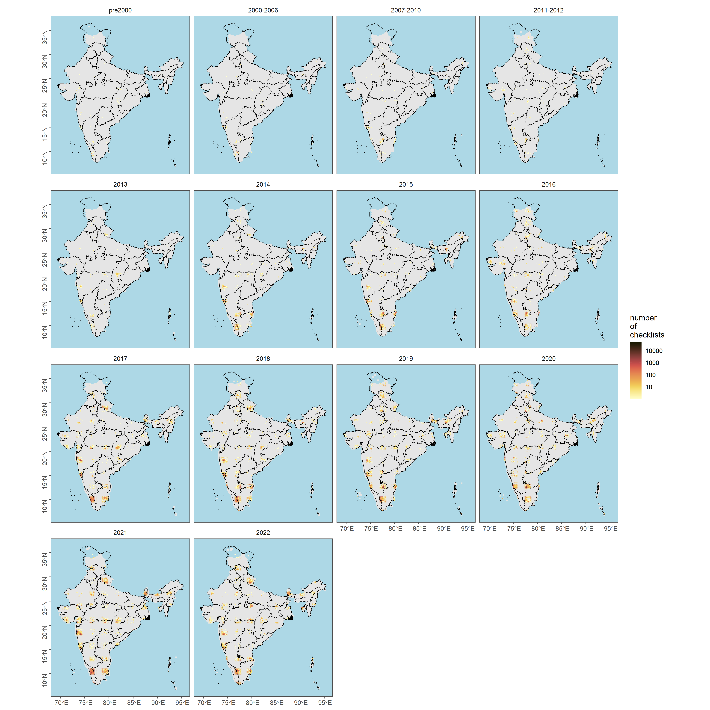
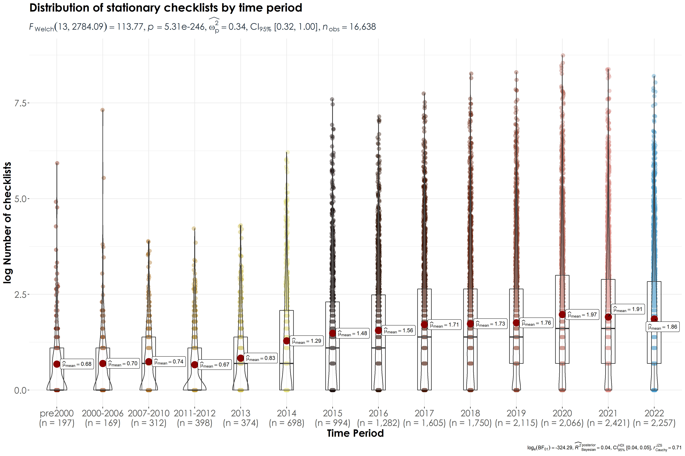
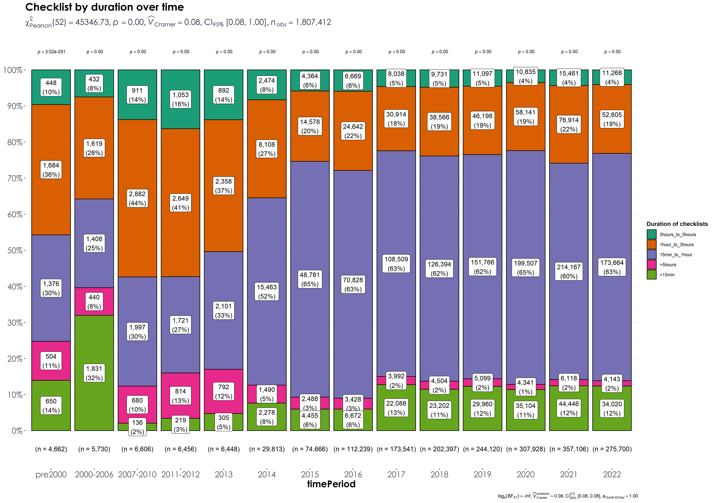

Section 5 Protocol type
In this script, we will visualize checklist observations spatially and temporally to assess if there are differences in reporting of observations depending on protocol type - i.e. incidental, stationary, or traveling checklists. For the purpose of this exercise, only stationary and traveling checklists are chosen, as these two protocol types often contribute to complete checklists (incidental checklists are often ignored in most analyses as they only offer a snapshot of bird presence/absence at a location).
5.1 Prepare libraries
library(data.table)
library(readxl)
library(magrittr)
library(stringr)
library(dplyr)
library(tidyr)
library(readr)
library(ggplot2)
library(ggthemes)
library(scico)
library(extrafont)
library(sf)
library(rnaturalearth)
library(lme4)
library(multcomp)
library(sjPlot)
library(ggstatsplot)
library(paletteer)5.3 Subset data by stationary or traveling checklists
# stationary checklists
ebd_stat <- ebd_in %>%
filter(protocol_type == "Stationary") # ~ 7.3 million observations
# traveling checklists
ebd_trav <- ebd_in %>%
filter(protocol_type == "Traveling") # ~ 25 million observations
# Clearly, majority of observations are coming from traveling checklists
## count checklists in cell
ebd_summary_stat <- ebd_stat[, nchk := length(unique(sampling_event_identifier)),
by = .(X, Y, timePeriod)]
ebd_summary_trav <- ebd_trav[, nchk := length(unique(sampling_event_identifier)),
by = .(X, Y, timePeriod)]
# count checklists reporting each species in cell and get proportion
ebd_summary_stat <- ebd_summary_stat[, .(nrep = length(unique(
sampling_event_identifier
))),
by = .(X, Y, nchk, scientific_name, timePeriod)
]
ebd_summary_stat[, p_rep := nrep / nchk]
ebd_summary_trav <- ebd_summary_trav[, .(nrep = length(unique(
sampling_event_identifier
))),
by = .(X, Y, nchk, scientific_name, timePeriod)
]
ebd_summary_trav[, p_rep := nrep / nchk]
# complete the dataframe for no reports
# keep no reports as NA --- allows filtering based on proportion reporting
ebd_summary_stat <- setDF(ebd_summary_stat) %>%
complete(
nesting(X, Y), scientific_name, timePeriod # ,
# fill = list(p_rep = 0)
) %>%
filter(!is.na(p_rep))
ebd_summary_trav <- setDF(ebd_summary_trav) %>%
complete(
nesting(X, Y), scientific_name, timePeriod # ,
# fill = list(p_rep = 0)
) %>%
filter(!is.na(p_rep))
# filter for species list above
ebd_summary_stat <- ebd_summary_stat[ebd_summary_stat$scientific_name %in% speciesOfInterest$scientific_name, ]
ebd_summary_trav <- ebd_summary_trav[ebd_summary_trav$scientific_name %in% speciesOfInterest$scientific_name, ]5.4 Checklist distribution over time for stationary and traveling checklists
# total number of checklists
tot_n_chklist_stat <- ebd_summary_stat %>%
distinct(X, Y, nchk, timePeriod)
tot_n_chklist_trav <- ebd_summary_trav %>%
distinct(X, Y, nchk, timePeriod)
# species-specific number of grids by time Period
spp_grids_stat <- ebd_summary_stat %>%
group_by(scientific_name, timePeriod) %>%
distinct(X, Y) %>%
count(scientific_name,
name = "n_grids"
)
spp_grids_trav <- ebd_summary_trav %>%
group_by(scientific_name, timePeriod) %>%
distinct(X, Y) %>%
count(scientific_name,
name = "n_grids"
)
# Write the above two results
write.csv(spp_grids_stat, "results/04_ngrids-per-spp-by-timePeriod-statChk.csv", row.names=F)
write.csv(spp_grids_trav, "results/04_ngrids-per-spp-by-timePeriod-travChk.csv", row.names=F)5.5 Figure: Checklist distribution by time period
# reordering factors for plotting
tot_n_chklist_stat$timePeriod <- factor(tot_n_chklist_stat$timePeriod, levels = c("pre2000", "2000-2006", "2007-2010","2011-2012","2013","2014","2015",
"2016","2017","2018","2019","2020","2021","2022"))
tot_n_chklist_trav$timePeriod <- factor(tot_n_chklist_trav$timePeriod, levels = c("pre2000", "2000-2006", "2007-2010","2011-2012","2013","2014","2015",
"2016","2017","2018","2019","2020","2021","2022"))
# get a plot of number of checklists across grids for each timePeriod
plotNchk_stat <-
ggplot() +
geom_sf(data = land, fill = "grey90", col = NA) +
geom_tile(
data = tot_n_chklist_stat,
aes(X, Y, fill = nchk), lwd = 0.5, col = "grey90"
) +
geom_sf(data = india_states, fill = NA, col = "black", lwd = 0.3) +
scale_fill_scico(
palette = "lajolla",
direction = 1,
trans = "log10",
limits = c(1, 50000),
breaks = 10^c(1:5)
) +
facet_wrap(~timePeriod) +
coord_sf(xlim = bbox[c("xmin", "xmax")], ylim = bbox[c("ymin", "ymax")]) +
theme_few() +
theme(
legend.position = "right",
axis.title = element_blank(),
axis.text.y = element_text(angle = 90),
panel.background = element_rect(fill = "lightblue")
) +
labs(fill = "number\nof\nchecklists")
# export data
ggsave(plotNchk_stat,
filename = "figs/fig_number_checklists_25km_by_timePeriod_statChk.png", height = 15, width = 15, device = png(), dpi = 300
)
dev.off()
plotNchk_trav <-
ggplot() +
geom_sf(data = land, fill = "grey90", col = NA) +
geom_tile(
data = tot_n_chklist_trav,
aes(X, Y, fill = nchk), lwd = 0.5, col = "grey90"
) +
geom_sf(data = india_states, fill = NA, col = "black", lwd = 0.3) +
scale_fill_scico(
palette = "lajolla",
direction = 1,
trans = "log10",
limits = c(1, 50000),
breaks = 10^c(1:5)
) +
facet_wrap(~timePeriod) +
coord_sf(xlim = bbox[c("xmin", "xmax")], ylim = bbox[c("ymin", "ymax")]) +
theme_few() +
theme(
legend.position = "right",
axis.title = element_blank(),
axis.text.y = element_text(angle = 90),
panel.background = element_rect(fill = "lightblue")
) +
labs(fill = "number\nof\nchecklists")
# export data
ggsave(plotNchk_trav,
filename = "figs/fig_number_checklists_25km_by_timePeriod_travChk.png", height = 15, width = 15, device = png(), dpi = 300
)
dev.off()

5.6 Testing for differences in number of checklists by time period and protocol type
# add a grid code (to be used in a random effects model)
tot_n_chklist_stat <- tot_n_chklist_stat %>%
group_by(X,Y) %>%
mutate(gridCode = cur_group_id()) %>%
ungroup()
tot_n_chklist_trav <- tot_n_chklist_trav %>%
group_by(X,Y) %>%
mutate(gridCode = cur_group_id()) %>%
ungroup()
# Note: this takes a long-time to run
glmm_nChk_time_stat <- glmer(nchk ~ timePeriod + (1|gridCode), data = tot_n_chklist_stat, family = poisson(link="log"))
glmm_nChk_time_trav <- glmer(nchk ~ timePeriod + (1|gridCode), data = tot_n_chklist_trav, family = poisson(link="log"))
tukey_nChk_time_stat <- summary(glht(glmm_nChk_time_stat, linfct=mcp(timePeriod ="Tukey")))
cld(tukey_nChk_time_stat)
# pre2000 2000-2006 2007-2010 2011-2012 2013 2014 2015
# "c" "d" "a" "a" "b" "e" "g"
# 2016 2017 2018 2019 2020 2021 2022
# "f" "h" "j" "i" "l" "k" "i"
tukey_nChk_time_trav <- summary(glht(glmm_nChk_time_trav, linfct=mcp(timePeriod ="Tukey")))
cld(tukey_nChk_time_trav)
# pre2000 2000-2006 2007-2010 2011-2012 2013 2014 2015
# "c" "ac" "d" "b" "a" "e" "f"
# 2016 2017 2018 2019 2020 2021 2022
# "g" "i" "h" "j" "k" "m" "l" 5.7 Figure: violinplot of number of checklists
# create log values of nChk
tot_n_chklist_stat$logNchk <- log(tot_n_chklist_stat$nchk)
tot_n_chklist_trav$logNchk <- log(tot_n_chklist_trav$nchk)
fig_nchk_time_stat <- ggbetweenstats(
data = tot_n_chklist_stat,
x = timePeriod,
y = logNchk,
xlab = "Time Period",
ylab = "log Number of checklists",
title = "Distribution of stationary checklists by time period",
plot.type = "boxviolin",
pairwise.comparisons = F)+ ## Note: this is done to avoid plot cluttering
scale_color_manual(values = c("#7E1900", "#944611", "#A66B20", "#B89130", "#CBB94A", "#E0DC7B","#180B09" ,"#2C0E00", "#461300", "#68240F", "#8E422E", "#B36556","#D88881", "#4799C9")) +
theme(plot.title = element_text(family = "Century Gothic",
size = 18, face = "bold"),
axis.title = element_text(family = "Century Gothic",
size = 16, face = "bold"),
axis.text = element_text(family="Century Gothic",size = 14),
plot.subtitle = element_text(
family = "Century Gothic",
size = 14,
face = "bold",
color="#1b2838"
))
fig_nchk_time_trav <- ggbetweenstats(
data = tot_n_chklist_trav,
x = timePeriod,
y = logNchk,
xlab = "Time Period",
ylab = "log Number of checklists",
title = "Distribution of traveling checklists by time period",
plot.type = "boxviolin",
pairwise.comparisons = F)+ ## Note: this is done to avoid plot cluttering
scale_color_manual(values = c("#7E1900", "#944611", "#A66B20", "#B89130", "#CBB94A", "#E0DC7B","#180B09" ,"#2C0E00", "#461300", "#68240F", "#8E422E", "#B36556","#D88881", "#4799C9")) +
theme(plot.title = element_text(family = "Century Gothic",
size = 18, face = "bold"),
axis.title = element_text(family = "Century Gothic",
size = 16, face = "bold"),
axis.text = element_text(family="Century Gothic",size = 14),
plot.subtitle = element_text(
family = "Century Gothic",
size = 14,
face = "bold",
color="#1b2838"
))
ggsave(fig_nchk_time_stat, filename = "figs/fig_logChecklists_timePeriod_statChk.png", width = 15, height = 10, device = png(), units = "in", dpi = 300)
dev.off()
ggsave(fig_nchk_time_trav, filename = "figs/fig_logChecklists_timePeriod_travChk.png", width = 15, height = 10, device = png(), units = "in", dpi = 300)
dev.off()
## Note: pairwise comparisons where there is a significant difference in the log Number of checklists across the time periods compared (using a Games-Howell test)
## Please view the statistics below for more details
stats_statChk_logNChk <- pairwise_comparisons(tot_n_chklist_stat, timePeriod, logNchk) %>%
filter(p.value <= 0.05) %>%
data.frame()
write.csv(stats_statChk_logNChk[,-9], "results/04_pairwiseComparisons_statChk_logNchk.csv", row.names = F)
stats_travChk_logNChk <- pairwise_comparisons(tot_n_chklist_trav, timePeriod, logNchk) %>%
filter(p.value <= 0.05) %>%
data.frame()
write.csv(stats_travChk_logNChk[,-9], "results/04_pairwiseComparisons_travChk_logNchk.csv", row.names = F)
 ## What is the proportion of checklists from each timeperiod grid that are stationary vs. traveling checklists?
## What is the proportion of checklists from each timeperiod grid that are stationary vs. traveling checklists?
stat_trav <- left_join(tot_n_chklist_stat[,-c(5,6)], tot_n_chklist_trav[,-c(5,6)],by = c("X","Y", "timePeriod")) %>%
replace(is.na(.), 0)
names(stat_trav)[4] <- "Stationary"
names(stat_trav)[5] <- "Traveling"
stat_trav <- stat_trav %>%
pivot_longer(cols = 4:5, names_to = "protocol_type", values_to = "nChk")
fig_prop_stat_trav <-
ggbarstats(
data = stat_trav,
x = protocol_type,
y = timePeriod,
counts = nChk,
label = "both",
title = "Stationary vs. Traveling checklists by time period",
legend.title = "Protocol type") +
theme(plot.title = element_text(family = "Century Gothic",
size = 18, face = "bold"),
axis.title = element_text(family = "Century Gothic",
size = 16, face = "bold"),
axis.text = element_text(family="Century Gothic",size = 14),
plot.subtitle = element_text(
family = "Century Gothic",
size = 14,
face = "bold",
color="#1b2838"
))
ggsave(fig_prop_stat_trav, filename = "figs/fig_prop_stat_vs_travChk.png", width = 15, height = 10, device = png(), units = "in", dpi = 300)
dev.off()Proportion of stationary and traveling checklists by tim period. Here, n refers to the number of checklists for which data exists/was reported for each time period.
5.8 Examining variation in duration of checklists over time
# stationary or traveling checklists
ebd_duration <- ebd_in %>%
filter(protocol_type == "Stationary" | protocol_type == "Traveling") %>% mutate(duration_cat = case_when(
duration_minutes < 15 ~ "<15min",
duration_minutes >= 15 & duration_minutes <= 60 ~ "15min_to_1hour",
duration_minutes > 60 & duration_minutes <= 180 ~ "1hour_to_3hours",
duration_minutes > 180 & duration_minutes <= 300 ~ "3hours_to_5hours",
duration_minutes > 300 ~ ">5hours")) %>%
drop_na(., duration_cat)
## count checklists in cell
ebd_summary_dur <- ebd_duration[, nchk := length(unique(sampling_event_identifier)),
by = .(X, Y, timePeriod, duration_cat)]
# count checklists reporting each species in cell and get proportion
ebd_summary_dur <- ebd_summary_dur[, .(nrep = length(unique(
sampling_event_identifier
))),
by = .(X, Y, nchk, scientific_name, timePeriod, duration_cat)
]
ebd_summary_dur[, p_rep := nrep / nchk]
# complete the dataframe for no reports
# keep no reports as NA --- allows filtering based on proportion reporting
ebd_summary_dur <- setDF(ebd_summary_dur) %>%
complete(
nesting(X, Y), scientific_name, timePeriod, duration_cat # ,
# fill = list(p_rep = 0)
) %>%
filter(!is.na(p_rep))
# filter for species list above
ebd_summary_dur <- ebd_summary_dur[ebd_summary_dur$scientific_name %in% speciesOfInterest$scientific_name, ]
# total number of checklists
tot_n_chklist_dur <- ebd_summary_dur %>%
distinct(X, Y, nchk, timePeriod, duration_cat)
# reordering factors for plotting
tot_n_chklist_dur$timePeriod <- factor(tot_n_chklist_dur$timePeriod, levels = c("pre2000", "2000-2006", "2007-2010","2011-2012","2013","2014","2015",
"2016","2017","2018","2019","2020","2021","2022"))
# visualization
fig_duration <-
ggbarstats(
data = tot_n_chklist_dur,
x = duration_cat,
y = timePeriod,
counts = nchk,
label = "both",
title = "Checklist by duration over time",
legend.title = "Duration of checklists") +
theme(plot.title = element_text(family = "Century Gothic",
size = 18, face = "bold"),
axis.title = element_text(family = "Century Gothic",
size = 16, face = "bold"),
axis.text = element_text(family="Century Gothic",size = 14),
plot.subtitle = element_text(
family = "Century Gothic",
size = 14,
face = "bold",
color="#1b2838"
))
ggsave(fig_duration, filename = "figs/fig_duration_nchk_timePeriod.png", width = 17, height = 12, device = png(), units = "in", dpi = 300)
dev.off() ## Examining variation in distance covered (effort) across traveling checklists over time
# traveling checklists
ebd_dist <- ebd_in %>%
filter(protocol_type == "Traveling") %>%
mutate(dist_cat = case_when(
effort_distance_km < 1 ~ "<1km",
effort_distance_km >= 1 & effort_distance_km <= 3 ~ "1km_to_3km",
effort_distance_km > 3 & effort_distance_km <= 5 ~ "3km_to_5km",
effort_distance_km > 5 & duration_minutes <= 10 ~ "5km_to_10km",
effort_distance_km > 10 ~ ">10km")) %>%
drop_na(., dist_cat)
## count checklists in cell
ebd_summary_dist <- ebd_dist[, nchk := length(unique(sampling_event_identifier)),
by = .(X, Y, timePeriod, dist_cat)]
# count checklists reporting each species in cell and get proportion
ebd_summary_dist <- ebd_summary_dist[, .(nrep = length(unique(
sampling_event_identifier
))),
by = .(X, Y, nchk, scientific_name, timePeriod, dist_cat)
]
ebd_summary_dist[, p_rep := nrep / nchk]
# complete the dataframe for no reports
# keep no reports as NA --- allows filtering based on proportion reporting
ebd_summary_dist <- setDF(ebd_summary_dist) %>%
complete(
nesting(X, Y), scientific_name, timePeriod, dist_cat # ,
# fill = list(p_rep = 0)
) %>%
filter(!is.na(p_rep))
# filter for species list above
ebd_summary_dist <- ebd_summary_dist[ebd_summary_dist$scientific_name %in% speciesOfInterest$scientific_name, ]
# total number of checklists
tot_n_chklist_dist <- ebd_summary_dist %>%
distinct(X, Y, nchk, timePeriod, dist_cat)
# reordering factors for plotting
tot_n_chklist_dist$timePeriod <- factor(tot_n_chklist_dist$timePeriod, levels = c("pre2000", "2000-2006", "2007-2010","2011-2012","2013","2014","2015",
"2016","2017","2018","2019","2020","2021","2022"))
# visualization
fig_dist <-
ggbarstats(
data = tot_n_chklist_dist,
x = dist_cat,
y = timePeriod,
counts = nchk,
label = "both",
title = "Checklist by effort (distance covered in traveling checklists) over time",
legend.title = "Distance covered") +
theme(plot.title = element_text(family = "Century Gothic",
size = 18, face = "bold"),
axis.title = element_text(family = "Century Gothic",
size = 16, face = "bold"),
axis.text = element_text(family="Century Gothic",size = 14),
plot.subtitle = element_text(
family = "Century Gothic",
size = 14,
face = "bold",
color="#1b2838"
))
ggsave(fig_dist, filename = "figs/fig_distance_nchk_timePeriod.png", width = 17, height = 12, device = png(), units = "in", dpi = 300)
dev.off()Distribution of checklists by distance covered in traveling checklists across time. Here, n refers to the number of checklists for which data exists/was reported for each time period.